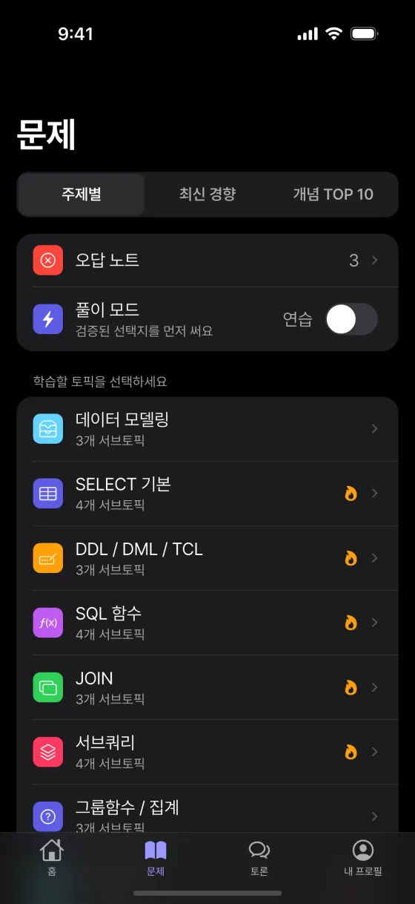
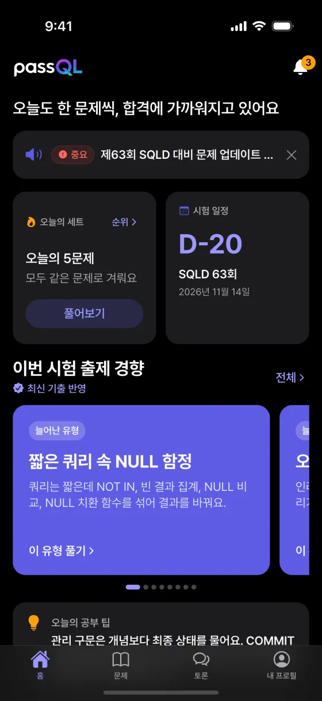
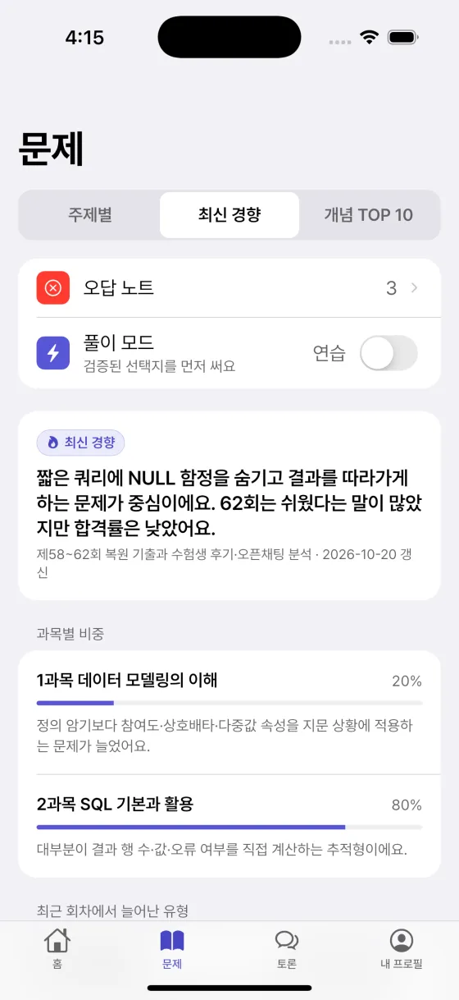
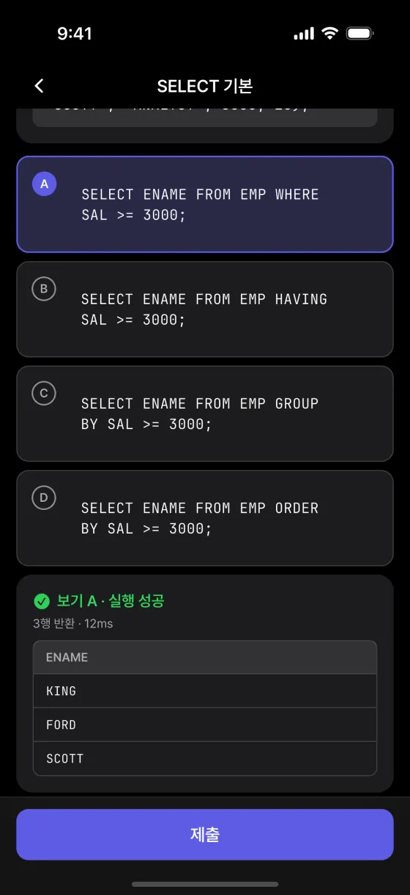
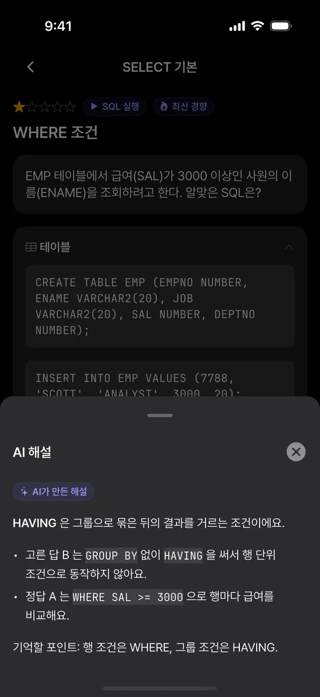
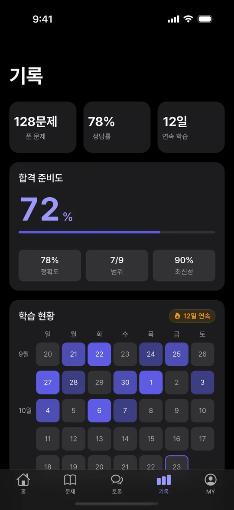
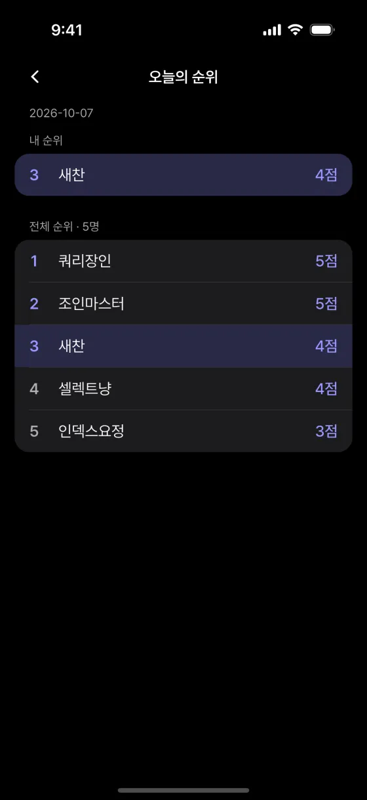

수험서가 너무 두꺼워요
책 없이 문제로 시작해요. 시험 범위를 주제별로 나눠 휴대폰으로 틈틈이 풀어요.
SQLD 자격증 문제 풀이 앱
SQLD 제63회까지
두꺼운 수험서 대신 최신 출제 경향을 반영한 문제를 풀고, 틀린 이유는 AI 해설로 바로 확인하세요. 매일 5문제부터 합격 준비도까지 passQL 하나면 충분해요.
무료로 시작 · 소셜 계정으로 바로 로그인 · Android 앱은 출시 준비 중이라 웹으로 이용할 수 있어요
SQLD 제63회까지
2026년 11월 14일 (토)
2026년 11월 14일 (토)


수험생 고민
passQL은 이 네 가지를 풀려고 만들었어요.
수험서가 너무 두꺼워요
책 없이 문제로 시작해요. 시험 범위를 주제별로 나눠 휴대폰으로 틈틈이 풀어요.
요즘 시험 경향을 모르겠어요
제58~62회 복원 기출과 수험생 후기를 분석해 과목별 비중과 늘어난 유형을 보여 줘요.
왜 틀렸는지 모르겠어요
내가 고른 답이 왜 틀렸는지, 정답과 무엇이 다른지 AI 해설이 바로 짚어 줘요.
꾸준히 하기가 어려워요
하루 5문제 오늘의 세트와 연속 학습일, 시험 D-day 알림이 매일 공부를 이어 줘요.
기능
문제, 해설, 경향, 기록까지. 다른 교재나 앱을 오가지 않아도 돼요.
매일 모든 회원이 같은 5문제를 풀고 순위를 확인해요. 부담 없는 분량이라 매일 이어 가기 좋아요.
제58~62회 복원 기출과 수험생 후기를 분석했어요. 과목별 비중과 최근 늘어난 유형부터 풀 수 있어요.
데이터 모델링부터 윈도우 함수까지 9개 주제로 나눴어요. 자주 나오는 개념은 TOP 10으로 먼저 잡아요.
보기의 SQL을 실제로 실행해 결과 표를 보여 줘요. 외우지 말고 왜 정답인지 눈으로 확인하세요.
정답 근거, 시험 팁, 핵심 개념을 정리하고 내가 고른 오답이 왜 틀렸는지 설명해요.
틀린 문제는 오답 노트에 모여 다시 풀어요. 연습과 실전 풀이 모드를 골라 쓸 수 있어요.
정확도, 학습 범위, 최신 경향 대비를 합쳐 지금 얼마나 준비됐는지 숫자로 보여 줘요.
푼 날이 달력에 쌓이고 연속 학습일이 이어져요. 시험까지 남은 날도 홈에서 바로 보여요.
헷갈리는 문제는 다른 수험생과 이야기 나눠요. 같은 시험을 준비하는 사람들이 모여 있어요.
오늘의 세트가 열리면, 시험이 다가오면 알려 드려요. 잊지 않고 매일 풀 수 있어요.
학습 흐름
같은 흐름을 반복하면 약한 주제부터 메워져요.
오늘의 세트로 모두가 같은 5문제를 풀고 순위를 확인해요.
정답 근거와 오답 이유, 시험 팁을 바로 읽어요.
틀린 문제만 모아 다시 풀며 약한 곳을 메워요.
정확도·범위·최신성으로 지금 준비 상태를 숫자로 봐요.
최신 경향 미리보기
제58~62회 복원 기출과 수험생 후기·오픈채팅 분석
짧은 쿼리에 NULL 함정을 숨기고 결과를 따라가게 하는 문제가 중심이에요. 62회는 쉬웠다는 말이 많았지만 합격률은 낮았어요.

NOT IN, 빈 결과 집계, NULL 비교, NULL 치환 함수를 섞어 결과를 바꿔요.
보기마다 SQL을 주고 결과 행 수가 가장 많은 것, 결과가 다른 것을 골라요.
인라인 뷰 별칭을 바깥에서 쓰거나 스칼라 서브쿼리가 여러 행을 돌려주는 SQL을 찾아요.
ROWNUM이 ORDER BY보다 먼저 붙는 점과 부등 조건에서 행이 탈락하는 점을 노려요.
시험 범위
주제를 골라 차근차근 풀거나, 자주 나오는 개념 TOP 10부터 잡을 수 있어요. SQLD 시험 안내 보기
앱 화면




무료와 Pro
먼저 무료로 풀어 보고, 시험이 가까워지면 이용권으로 전부 열어요.
| 항목 | 무료 | Pro |
|---|---|---|
| 문제 풀이 | 하루 일정량 | 제한 없음 |
| AI 해설 | 한 줄 요약 | 보기별 전체 |
| 보기 SQL 직접 실행 | 제공 안 함 | 포함 |
| 실전 모드 · 토픽 | 제공 안 함 | 포함 |
| 최신 출제 경향 | 제공 안 함 | 포함 |
| 학습 통계 | 기본 | 약점 분석 |
Pro 이용권은 1개월·3개월 두 가지이며 자동 결제되지 않아요. 가격은 앱에서 확인할 수 있어요.
무료로 내려받아 바로 시작할 수 있어요. 무료로는 하루 일정량의 문제를 풀 수 있고, Pro 이용권(1개월·3개월)을 쓰면 문제를 제한 없이 풀고 SQL 실행, 보기별 전체 해설, 최신 출제 경향까지 열려요. 자동 결제는 없어요.
SQLD 두 과목의 범위를 9개 주제로 나눠 문제를 제공해요. 1과목 데이터 모델링, 2과목 SELECT·DDL/DML/TCL·함수·JOIN·서브쿼리·그룹함수·윈도우 함수·계층과 PIVOT이에요.
제58~62회 복원 기출과 수험생 후기를 분석해 과목별 비중, 최근 늘어난 유형, 자주 나오는 개념 TOP 10을 정리했어요. '최신 경향' 표시가 붙은 문제부터 골라 풀 수 있어요.
매일 열리는 오늘의 세트 5문제가 기본이에요. 여유가 있으면 약한 주제와 오답 노트를 더 풀고, 합격 준비도로 남은 부분을 확인하세요.
SQLP 필기의 데이터 모델링, SQL 기본 및 활용 과목은 SQLD와 범위가 겹쳐 그대로 연습할 수 있어요. SQL 고급 활용 및 튜닝 과목과 실기는 아직 다루지 않아요.
네. passql.vercel.app 에서 로그인하면 앱과 같은 학습 기록으로 이어서 풀 수 있어요.
Google Play 출시를 준비하고 있어요. 그전에는 Android 휴대폰의 브라우저에서 웹으로 이용할 수 있어요.
SQLD 제63회 · 2026년 11월 14일 (토)
오늘의 세트 한 번만 풀어 보세요. 어디가 약한지 바로 보여요.